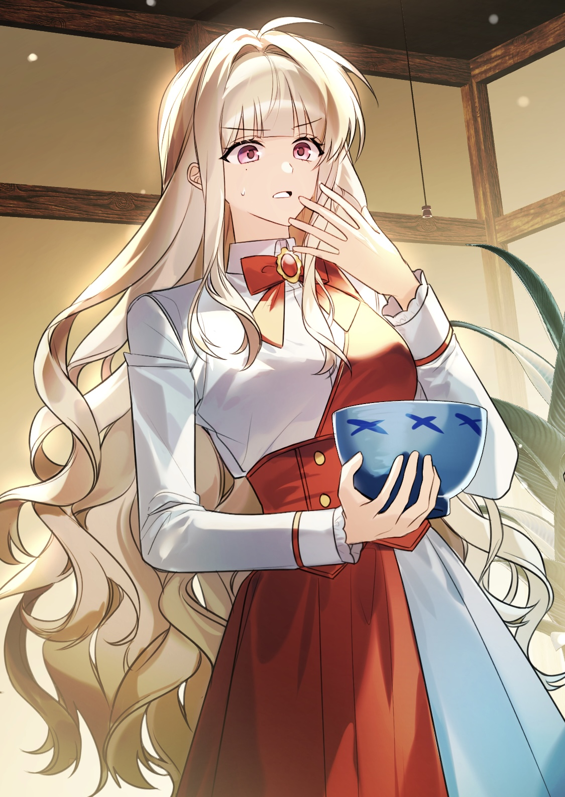

하타노 에루

[ 정보 더 보기 ]
개요
은혼의 드림주.
상세
"자자- 일단 진정하고 뭐든 좋잖아?"
첫 등장 대사.
우주에서 온 아카이서커스단의 단장.
서커스단장이라는 직위에 비해 몸으로 하는 재주는 발리송 제외 전혀 못한다고 한다.
서커스하면 떠오르는 것들은 전부 이츠타에게 부탁하는 몹쓸단장.
방금 처음 본 인물과도 10년지기 친구처럼 대화할만큼 넉살이 좋다.
캐릭터성
비주얼
분홍색 눈동자, 주황빛이 도는 백발에 허리까지 오는 곱슬 웨이브 머리를 가지고 있다. 관리의 필요성을 본인도 강하게 느끼고 있으나 머리카락이 아깝다는 이유로 필요할 때마다 묶는 걸로 합의를 보고있다.
오른쪽 눈 밑에 점이 있는 것이 특징이며, 표정변화가 다양하여 인상이 쉽게 바뀌는 편이다.
성격
전반적으로 유쾌하고 서글서글하다. 매번 주변이 시끄러운 편이라 사건 사고가 잦음에도 능청스럽게 상황을 빠져나가는 여유로움도 가지고 있다.
사기꾼 그래도 나름대로 최소한의 피해 복구는 한다.
사교적인 행적과 달리 실용주의적인 인물이다. 정에 연연하지 않으며 판단도 빠르기에 상황에 따라서는 사람을 이용하기도 한다. 심지어 이용당한 인물조차 자신이 이용당했다는 걸 눈치채지 못할 정도로 철저하게 움직인다.
서프라이즈를 좋아하는데 그 이유가 '사람이 놀라는 모습을 보는 게 즐거워서'.
측근인 이츠타가 말하길 하타노의 도S 스위치을 자극하는 특정 인물상이 있으며 그 사람들을 건드는 게 취미생활이라고 한다.
차 애호가
"차라고 다 같은 게 아니야. 찻잎의 발효도나 가공법, 심지어 채취 시기에 따라서도 맛이 달라지는 게―"
차를 굉장히 좋아하는 일명 오차즈키(お茶好き).
크지 않은 우주선임에도 다도 문화를 위한 방과 찻잎을 키우는 용도의 방을 따로 마련했을 정도이다.
모든 음식에 차를 말아먹는 괴식가이나, 오챠즈케라는 음식이 존재하기에 대체로 이걸 먹는다고 한다.
별개로 단 걸 좋아하지 않아 다과가 필요할 시 센베이나 스콘부를 곁들인다.
정보상
하쿠시라는 이명으로 정보상 활동을 하고 있다.
정보상하면 떠오르는 이미지와 달리 떠들썩하게 돌아다니는 걸 좋아하고 어디에 있어도 눈에 띌 착장을 하고 다닌다. 애초에 숨길 생각이 없어서 물어보면 알려줬을거라고 태평한 소리를 하기도 한다.
정치력 및 처세술만으로 정보상 일의 정점을 찍었다고 해도 과언이 아니다. 에도에서도 카츠라, 사사키, 히지카타 등 최소 3명과 거래하며 아슬아슬한 줄타기를 했음에도 모두 상호이득관계로 끝도 좋게 마무리되었다.
전투력
야토족 혼혈인 이츠타와 함께 다니다보니 직접 싸울 일이 많이 없어서 익숙하지 않다고 본인이 언급했다.
그래도 어린 나이부터 우주에서 이름을 날린 만큼 기본적인 전투능력은 가지고 있는 듯. 실제 장군 암살 편에서 후지바야시 닌자들과 싸울 때 전장에서 1인분은 하는 모습을 보여주었다.
사용하는 무기는 폴딩 나이프로, 가벼운 움직임과 트릭으로 급소를 재빠르게 노리는 것이 특징이다. 여차하면 쿠나이처럼 던지기도 한다.
작중 행적
자세한 내용은 하타노 에루/작중 행적 문서를 참고하십시오.
인간관계
자세한 내용은 하타노 에루/인간관계 문서를 참고하십시오.
여담
가르쳐줘 긴파치 선생에서는 사회 선생님으로 등장한다.